개념 학습
네트워크 환경 설정
개인용 컴퓨터 운영체제에서의 네트워크 설정
게이트웨이는 네트워크 간 통신을 중계하는 장치로, 다른 네트워크를 방문할 때 출입국 관리소와 같은 역할을 한다. 일반적으로 라우터가 게이트웨이 기능을 포함하고 있으며, 이때 게이트웨이의 주소는 라우터의 주소가 된다. DHCP를 사용하면 게이트웨이 주소를 자동으로 설정할 수 있다.
-
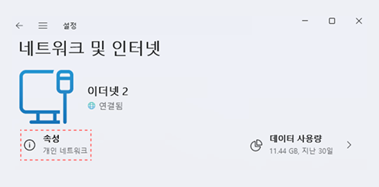
윈도 설정 창에서 <네트워크 및 인터넷>을 선택한 후, 현재 연결된 네트워크의 ‘속성’ 창을 연다.
-
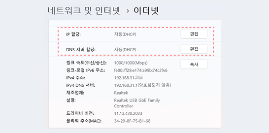 이더넷 설정중 iP 할당과 DNS 서버 할당을 편집하도록 유도하는 포인트 표기">
<IP 할당>과 <DNS 서버 할당>을 ‘자동(DHCP)’으로 설정한다. 필요하면 편집 버튼을 눌러 수동으로 입력할 수도 있다.
-
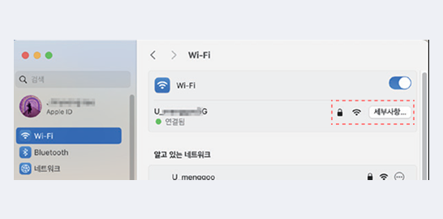
시스템 설정 창에서 현재 연결된 네트워크를 선택한 후,
<세부 사항> 버튼을 누른다. -
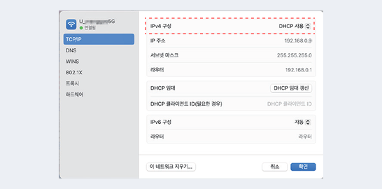
<TCP/IP> 항목의 IPv4 항목의 IPv4 구성을 'DHCP 사용' 으로 선택한다. 필요하면 수동 항목을 선택하여 직접 입력하여 사용할 수 있다.
개인용 컴퓨터 운영체제에서 네트워크 설정
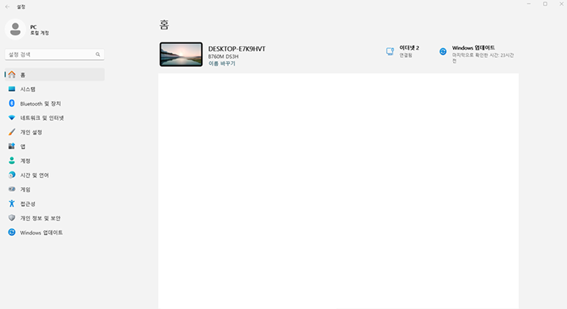
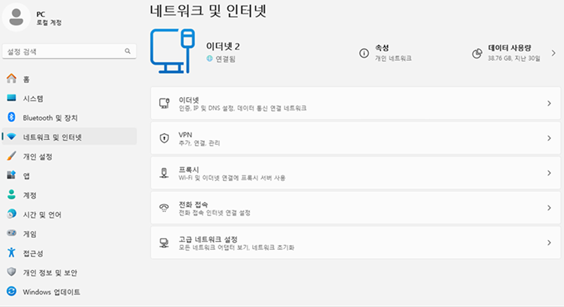
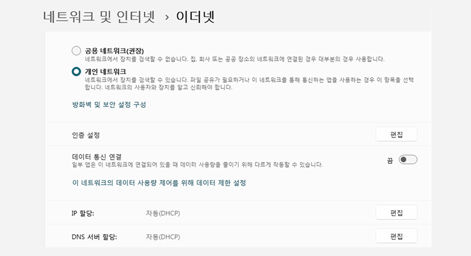
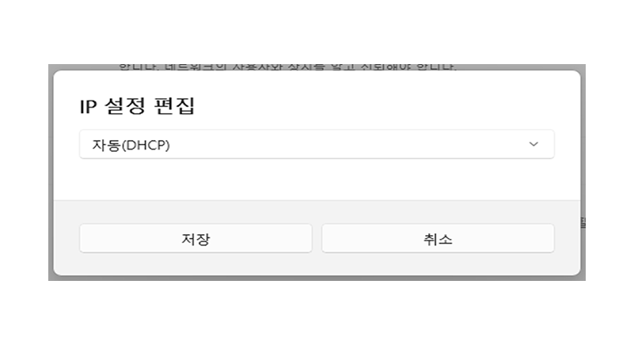
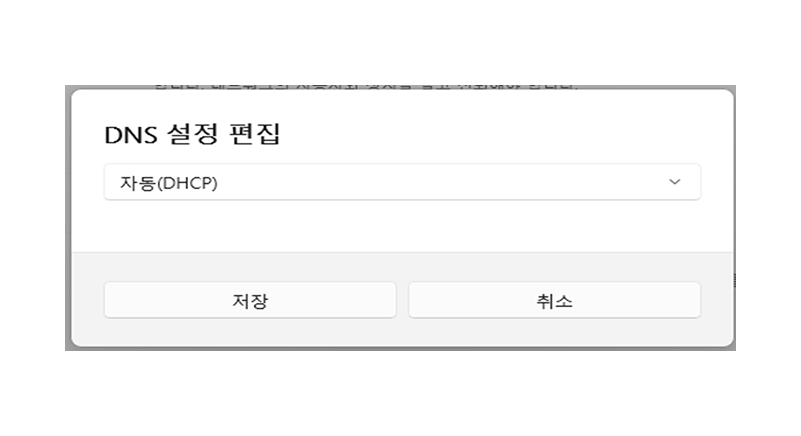
DHCP 설정이 완료되었습니다.
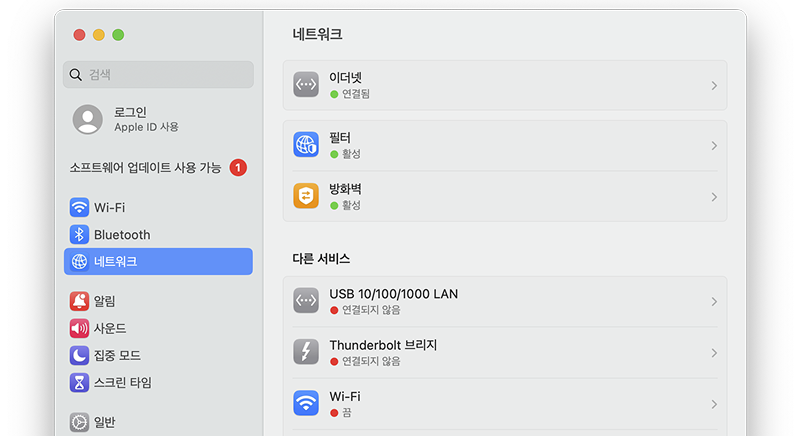
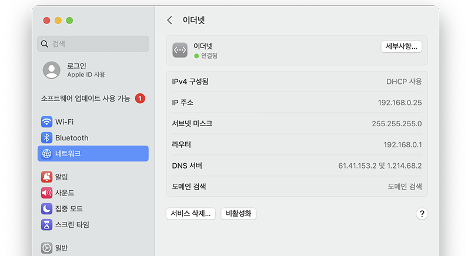
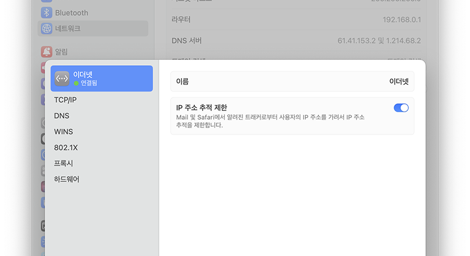
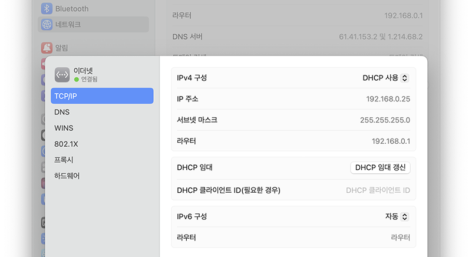
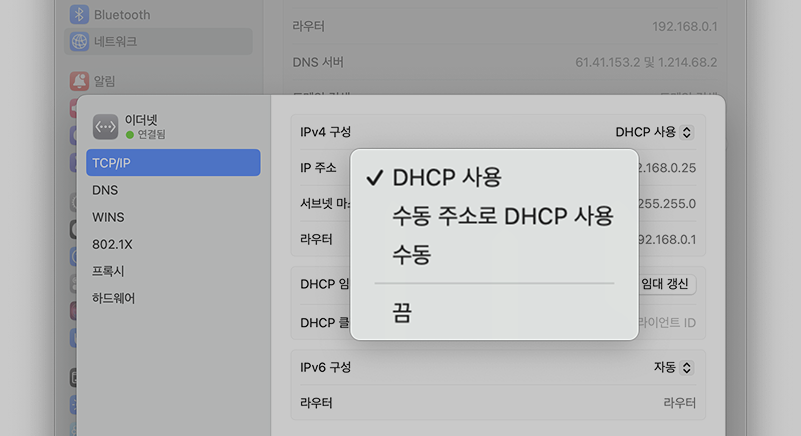
DHCP 설정이 완료되었습니다.